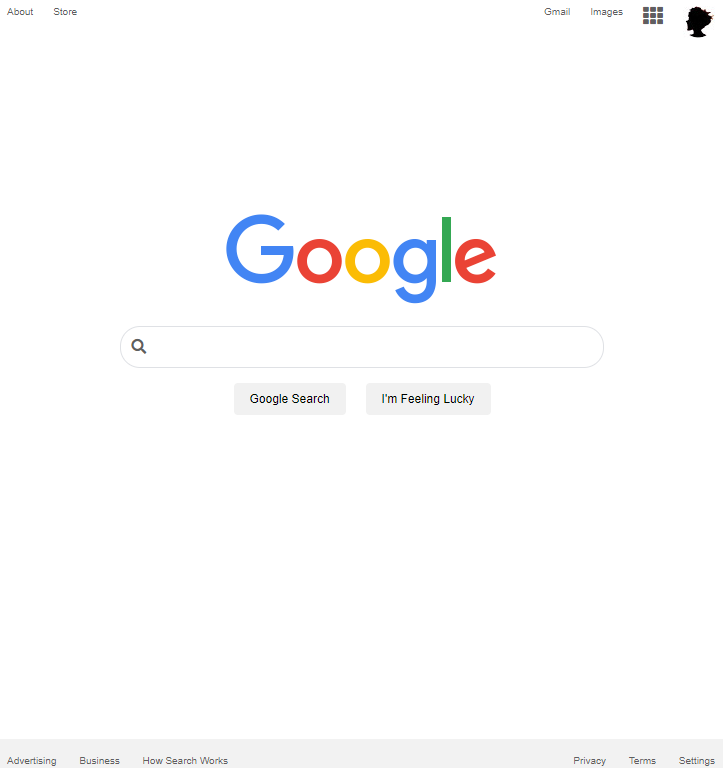

About Me
| HOMETOWN : | Philadelphia, Pennsylvania |
| HOBBIES : | cognition, writing, gaming |
| DEGREE : | Health Science |
| OCCUPATION : | Junior Develepor |
| EVERY-DAY-CARRY : | gratitude, curiosity, laughter |
I have been self-teaching computer science since 2017, using the myriad web resources available (e.g. FreeCodeCamp, The Odin Project, Launch School, Khan Academy). I began Thinkful's Engineering Immersion in October 2020 to faciliate my learning. I am excited to collaborate with teams in education and cloud technology.
Services
-
HTML
-
CSS
-
JAVASCRIPT
-
JQUERY
-
REACT
Message Me
Projects
As I take on projects, I add them to my Github portfolio to track my progress. Thanks to Github Pages, I have easy access to the production-ready view of each project I create. Take a look at some of my most proud moments as a junior develepor. Click on a project to see more.
Google Homepage:
The Google homepage project is assigned by The Odin Project to learners who want to practice responsive web design. I used HTML and CSS to create an exact replica...can you tell the difference?
Bookmark API:

Favorite websites can be saved all in one place with this Bookmark API. Users can use my app to create, filter, and delete bookmarks. I used JQuery to add some sleek interactivity. Stay tuned for added features!